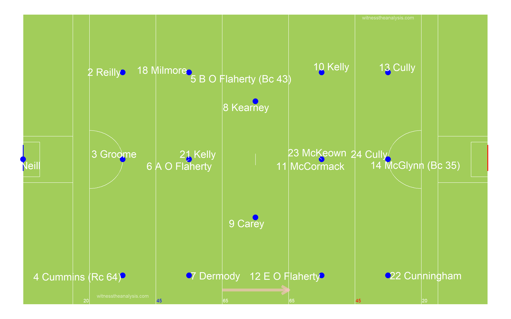
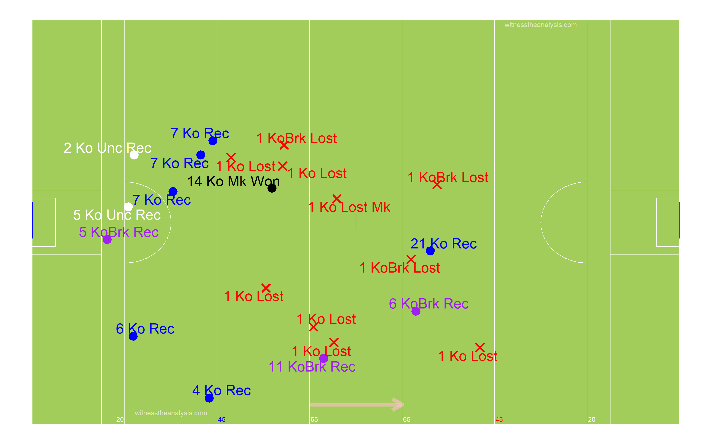
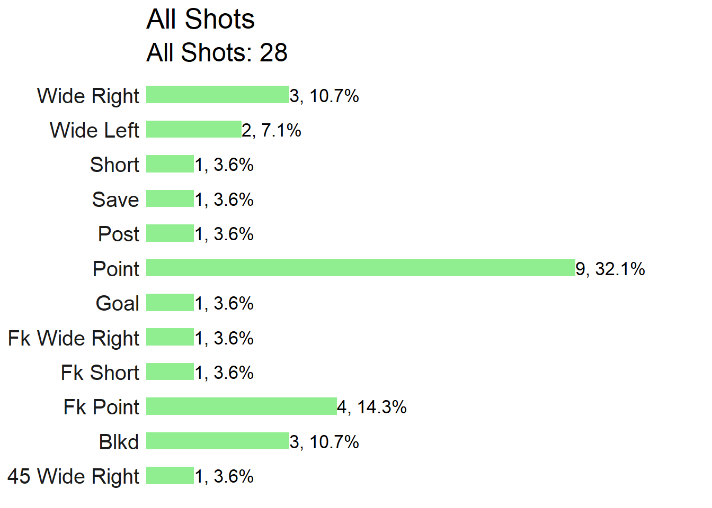

Carbury (0.13) vs Johnstown (1.13)
Kildare Senior Football Championship Round 1
#Summary ##Starting Line Up ###Carbury 
###Johnstown
##Scores| Carbury | Johnstown |
|---|---|
| Kelly 0-3 | L Flynn 0-2 (0-2fk), |
| O’Flaherty 0-7 (0-7fk), | S Doran 1-3, |
| Cully 0-1 | G Doran 0-1, |
| Kelly 0-1 | K McNally 0-2 (0-2fk), |
| Milmoe 0-1 | D Flynn 0-2 |
| C McNally 0-2 |
| Team | Score.Eff.. | Shots.PerPoss | Scores.PP | Op.Scores.PP | Fk.Score. | Ko. |
|---|---|---|---|---|---|---|
| Carbury | 38% | 46% | 24% | 11% | 78% | 55% |
| Johnstown | 48% | 51% | 25% | 18% | 67% | 59% |
##Scoring Timeline
##Score Differential
#Positioning & Possessions ##Average Position by Action ###Carbury ###Game
###Period
###Johnstown ###Game
###Period
##Areas of Play by Possession ###Carbury
###Johnstown
##Denisty Map (All Actions) ###Carbury
###Johnstown 
##Path of Possession
###Carbury
###Johnstown
#General ##Kick Outs ###Carbury

###Kickout Efficiency
###Kickout Network - Carbury
###Johnstown
###Kickout Efficiency
###Kickout Network - Johnstown
##Turn overs/Possession Won
###Carbury
###Johnstown

##Frees Won ###Carbury
###Johnstown
##Frees Loss ###Carbury
###Johnstown
#Attacking
##Attacking Stats| X | Carbury | X.1 | Johnstown | X.2 |
|---|---|---|---|---|
| Shot | Score | Shot | Score | |
| AttTime | 00:10:37 | 00:05:14 | 00:11:30 | 00:07:27 |
| possave | 00:00:27 | 00:00:24 | 00:00:25 | 00:00:32 |
| phaseave | 00:00:14 | 00:00:14 | 00:00:17 | 00:00:25 |
| Origin Type | ||||
| Shot | Score | Shot | Score | |
| PW | 18 | 9 | 20 | 9 |
| Ko | 5 | 4 | 7 | 5 |
| Pitch Area Origin | ||||
| Shot | Score | Shot | Score | |
| Def | 1 | 9 | 16 | 10 |
| Def Mid | 2 | 0 | 3 | 1 |
| Att Mid | 7 | 4 | 6 | 3 |
| Att | 1 | 0 | 2 | 0 |
| Poss Duration | ||||
| secs | Shot | Score | Shot | Score |
| 0-9 | 1 | 1 | 3 | 1 |
| 10-19 | 9 | 6 | 10 | 6 |
| 20-29 | 5 | 2 | 8 | 4 |
| 30-39 | 5 | 2 | 2 | 1 |
| 40-49 | 1 | 0 | 1 | 1 |
| 50-59 | 3 | 2 | 1 | 0 |
| 60-69 | 0 | 0 | 1 | 0 |
| 70+ | 0 | 0 | 1 | 1 |
| Team | Poss | Phase | All.Shots | All.Scores | Shots.PerPoss | Scores.PP | Shots.Op | Scores.Op | Score.Eff.. | Op.Scores.PP |
|---|---|---|---|---|---|---|---|---|---|---|
| Carbury | 54 | 78 | 25 | 13 | 46% | 24% | 16 | 6 | 38% | 11% |
| Johnstown | 55 | 73 | 27 | 14 | 49% | 25% | 20 | 10 | 50% | 18% |
| Team | Poss Time | Ave Poss Shot | Ave Phase Shot | Ave Poss Scr | Ave Phase Scr | Ave Act Sht | Ave Act Scr | |||
| Carbury | 00:30:29 | 00:00:27 | 00:00:14 | 00:00:24 | 00:00:14 | 12:00:00 | 11:02:24 | |||
| Johnstown | 00:27:53 | 00:00:35 | 00:00:26 | 00:00:21 | 00:00:14 | 16:33:36 | 18:28:48 |
| Carbury | Time | X | X.1 | X.2 | X.3 | X.4 | X.5 | X.6 | X.7 |
|---|---|---|---|---|---|---|---|---|---|
| Area | 0-9 | 10-19 | 20-29 | 30-39 | 40-49 | 50-59 | 60-69 | 70+ | total |
| Def | 0 | 3 | 2 | 5 | 1 | 3 | 0 | 0 | 14 |
| Def Mid | 0 | 1 | 1 | 0 | 0 | 0 | 0 | 0 | 2 |
| Att Mid | 1 | 4 | 2 | 0 | 0 | 0 | 0 | 0 | 7 |
| Att | 0 | 1 | 0 | 0 | 0 | 0 | 0 | 0 | 1 |
| Johnstown | Time | ||||||||
| Area | 0-9 | 10-19 | 20-29 | 30-39 | 40-49 | 50-59 | 60-69 | 70+ | total |
| Def | 1 | 4 | 5 | 2 | 1 | 1 | 1 | 1 | 16 |
| Def Mid | 0 | 2 | 1 | 0 | 0 | 0 | 0 | 0 | 3 |
| Att Mid | 1 | 3 | 2 | 0 | 0 | 0 | 0 | 0 | 6 |
| Att | 1 | 1 | 0 | 0 | 0 | 0 | 0 | 0 | 2 |
##Open Play Shots - Location & Outcome
###Carbury
###Shot Efficiency - Carbury
###Johnstown
###Shot Efficiency - Johnstown
##All Shots - Location & Outcome ###Carbury
###Johnstown 
##All Shots Origin by Possession ###Carbury (Blue = Score)
###Johnstown (Blue = Score)
##Open Play Shot Origin by Phase ###Carbury (Blue = Score)
###Johnstown (Blue = Score)
##Shot Network ###Carbury
###Johnstown
##Score Network ###Carbury
###Johnstown
#Passing
##All Passes ###Carbury

###Johnstown
##Passes into 45 ###Carbury
###Johnstown
##Passes Inside Opp 65 ###Carbury

###Johnstown
##Pass Network ###Carbury
###In Degree (Number of Players a Player Received a Pass from)
## Reilly A O Flaherty Dermody Kelly E O Flaherty McCormack McGlynn Cunningham Kelly Carey B O Flaherty Cully Groome
## 10 10 10 10 9 8 8 8 8 7 6 6 5
## Cummins McKeown Cully O Neill Kearney Milmore
## 5 5 5 4 4 3###Out Degree (Number of Players a Player Made a Pass to)
## A O Flaherty Dermody Reilly Carey E O Flaherty McGlynn Cully Kelly O Neill Cummins B O Flaherty Kelly McCormack
## 12 12 9 9 9 9 7 7 6 6 6 6 6
## Groome Cunningham McKeown Cully Milmore Kearney
## 5 5 5 5 4 3###Strength in (Number of Passes Received by a Player)
## Dermody Reilly Kelly E O Flaherty A O Flaherty Cunningham McGlynn Kelly McCormack Cully Groome B O Flaherty Carey
## 19 14 13 13 12 12 10 10 9 9 8 8 8
## Cummins Cully O Neill Kearney McKeown Milmore
## 7 6 5 5 5 4###Strength Out (Number of Passes/Shots Made by a Player)
## Dermody A O Flaherty Reilly B O Flaherty E O Flaherty Carey McGlynn Kelly McCormack Cunningham O Neill Cummins Kelly
## 21 16 13 11 11 10 10 10 9 9 8 8 8
## Cully Cully Groome McKeown Kearney Milmore
## 7 7 6 5 4 4###Betweenness Centrality (Flow of Passes through a Player)
## A O Flaherty Dermody Reilly Kelly Carey McGlynn E O Flaherty Kelly McCormack Cully Groome Cunningham Cummins
## 0.082974246 0.068416472 0.048110800 0.038368273 0.030151787 0.028931897 0.026138319 0.025415045 0.020234571 0.019396607 0.017288361 0.016119195 0.015702779
## Cully B O Flaherty O Neill McKeown Kearney Milmore
## 0.014287123 0.009866732 0.008086140 0.005944081 0.004466231 0.003761471###Closeness Centrality (How Well connected and central a Player is within the Teams Network)
## A O Flaherty Dermody Reilly Kelly E O Flaherty Kelly McGlynn B O Flaherty Carey McCormack Cully Cunningham Groome
## 0.9473684 0.8181818 0.7826087 0.7500000 0.7500000 0.7500000 0.7200000 0.6923077 0.6923077 0.6923077 0.6923077 0.6923077 0.6666667
## Cummins O Neill Cully McKeown Kearney Milmore
## 0.6666667 0.6428571 0.6428571 0.6206897 0.6000000 0.6000000###Entropy (The Unpredictability in who a Player Passes to/Takes shot)
## McCormack B O Flaherty Groome Cummins Kelly Cunningham Reilly Dermody Kearney E O Flaherty McGlynn O Neill Cully
## 0.9493125 0.9572272 0.9578792 0.9606293 0.9610582 0.9616475 0.9666778 0.9676820 0.9708358 0.9720820 0.9747327 0.9750064 0.9750064
## A O Flaherty Kelly Milmore Cully Carey McKeown
## 0.9758695 0.9782532 0.9795698 0.9796133 0.9869257 1.0000000###Global clustering coefficient (Groups of Players who pass to each other)
## [1] 0.6081081###eigen_centrality (How well connected the well connected are)
## Dermody Reilly A O Flaherty Cunningham E O Flaherty McGlynn B O Flaherty McCormack Kelly Kelly Carey O Neill Groome
## 1.0000000 0.7124464 0.6971854 0.6626358 0.6246569 0.5851583 0.5605918 0.5600370 0.5508136 0.5002100 0.4651851 0.3774349 0.3748032
## Cully Cummins Cully McKeown Kearney Milmore
## 0.3728435 0.3395422 0.3343631 0.2724610 0.2556359 0.2421207##Johnstown
###In Degree (Number of Players a Player Received a Pass from)
## Farrell G Doran S Doran O Donoghue Flanagan McNally L Flynn McNally J Higgins D Flynn Cribbin C McNally A Higgins Doyle O Connor
## 12 11 10 10 9 9 9 9 8 8 6 6 5 4 3
## Vaughan Hurley Holton
## 2 0 0###Out Degree (Number of Players a Player Made a Pass to)
## L Flynn Farrell McNally Flanagan S Doran O Donoghue J Higgins A Higgins Cribbin D Flynn McNally G Doran Doyle C McNally Hurley
## 12 11 10 9 9 9 8 8 8 8 7 6 5 4 3
## O Connor Holton Vaughan
## 2 1 1###Strength in (Number of Passes Received by a Player)
## Farrell S Doran D Flynn McNally McNally J Higgins Flanagan L Flynn G Doran O Donoghue A Higgins Cribbin C McNally Doyle O Connor
## 21 20 18 16 14 12 12 12 12 12 8 7 7 4 3
## Vaughan Hurley Holton
## 2 0 0###Strength Out (Number of Passes/Shots Made by a Player)
## L Flynn Farrell McNally McNally D Flynn S Doran G Doran Flanagan O Donoghue J Higgins Cribbin A Higgins Doyle C McNally Hurley
## 21 20 17 14 13 13 13 12 12 9 9 8 6 5 3
## O Connor Holton Vaughan
## 3 1 1###Betweenness Centrality (Flow of Passes through a Player)
## O Donoghue Farrell McNally L Flynn S Doran Flanagan J Higgins A Higgins G Doran McNally Cribbin D Flynn Doyle
## 0.1814931547 0.1132717398 0.0522590113 0.0517910216 0.0300302903 0.0282981786 0.0281658497 0.0240249361 0.0164377715 0.0156182763 0.0095868856 0.0056405316 0.0014705882
## C McNally Hurley O Connor Holton Vaughan
## 0.0007352941 0.0000000000 0.0000000000 0.0000000000 0.0000000000###Closeness Centrality (How Well connected and central a Player is within the Teams Network)
## L Flynn Farrell McNally O Donoghue Flanagan S Doran J Higgins Cribbin G Doran McNally A Higgins D Flynn Doyle C McNally O Connor
## 0.8500000 0.8500000 0.8095238 0.8095238 0.7727273 0.7727273 0.7391304 0.7391304 0.7391304 0.7391304 0.7083333 0.6538462 0.6296296 0.6071429 0.5483871
## Hurley Vaughan Holton
## 0.5312500 0.4857143 0.4594595###Entropy (The Unpredictability in who a Player Passes to/Takes shot)
## S Doran D Flynn McNally G Doran McNally Farrell L Flynn A Higgins O Connor J Higgins Flanagan O Donoghue C McNally Doyle Cribbin
## 0.9219877 0.9291577 0.9299756 0.9404015 0.9451339 0.9585870 0.9586658 0.9668633 0.9697239 0.9700450 0.9720820 0.9738495 0.9788379 0.9848587 0.9849358
## Hurley Vaughan
## 1.0000000 1.0000000###Global clustering coefficient (Groups of Players who pass to each other)
## [1] 0.7446043###eigen_centrality (How well connected the well connected are)
## Farrell S Doran D Flynn McNally L Flynn McNally G Doran Flanagan O Donoghue J Higgins A Higgins Cribbin C McNally Doyle O Connor
## 1.00000000 0.90313575 0.88582861 0.88581550 0.86483615 0.82250669 0.68700637 0.61088608 0.55543993 0.54136119 0.43342044 0.41943466 0.37325651 0.31005964 0.14786319
## Vaughan Hurley Holton
## 0.09075770 0.07394436 0.02071588#Player Stats ##Total Posessions per Player ###Carbury
###Johnstown
##Posessions Per Playing Time
##Player % involvement and shot efficiency| Team | ply | opshots | Totteamshot | opscr | Totteamscr | convrate |
|---|---|---|---|---|---|---|
| Carbury | O Neill | 0 | 0% | 0 | 0% |
|
| Carbury | Reilly | 1 | 7% | 0 | 0% | 0 |
| Carbury | Groome | 1 | 7% | 0 | 0% | 0 |
| Carbury | Cummins | 0 | 0% | 0 | 0% |
|
| Carbury | B O Flaherty | 0 | 0% | 0 | 0% |
|
| Carbury | A O Flaherty | 0 | 0% | 0 | 0% |
|
| Carbury | Dermody | 1 | 7% | 0 | 0% | 0% |
| Carbury | Kearney | 0 | 0% | 0 | 0% |
|
| Carbury | Carey | 0 | 0% | 0 | 0% |
|
| Carbury | Kelly | 5 | 33% | 3 | 75% | 60% |
| Carbury | McCormack | 0 | 0% | 0 | 0% |
|
| Carbury | E O Flaherty | 1 | 7% | 0 | 0% | 0% |
| Carbury | Cully | 1 | 7% | 1 | 25% | 100% |
| Carbury | McGlynn | 1 | 7% | 0 | 0% | 0% |
| Carbury | Cunningham | 1 | 7% | 0 | 0% | 0 |
| Carbury | Kelly | 1 | 7% | 1 | 25% | 100% |
| Carbury | McKeown | 1 | 7% | 0 | 0% | 0 |
| Carbury | Cully | 0 | 0% | 0 | 0% |
|
| Carbury | Milmore | 1 | 7% | 1 | 25% | 1 |
| Team | ply | opshots | Totteamshot | opscr | Totteamscr | convrate |
|---|---|---|---|---|---|---|
| Johnstown | Hurley | 0 | 0% | 0 | 0% |
|
| Johnstown | O Connor | 0 | 0% | 0 | 0% |
|
| Johnstown | J Higgins | 0 | 0% | 0 | 0% |
|
| Johnstown | A Higgins | 1 | 5% | 0 | 0% | 0% |
| Johnstown | Flanagan | 2 | 10% | 0 | 0% | 0 |
| Johnstown | McNally | 0 | 0% | 0 | 0% |
|
| Johnstown | Cribbin | 1 | 5% | 1 | 13% | 100% |
| Johnstown | L Flynn | 0 | 0% | 0 | 0% |
|
| Johnstown | D Flynn | 6 | 29% | 2 | 25% | 33% |
| Johnstown | Doyle | 0 | 0% | 0 | 0% |
|
| Johnstown | S Doran | 7 | 33% | 4 | 50% | 57% |
| Johnstown | G Doran | 1 | 5% | 1 | 13% | 100% |
| Johnstown | Farrell | 0 | 0% | 0 | 0% |
|
| Johnstown | McNally | 1 | 5% | 0 | 0% | 0% |
| Johnstown | O Donoghue | 0 | 0% | 0 | 0% |
|
| Johnstown | C McNally | 2 | 10% | 2 | 25% | 100% |
| Johnstown | Holton | 0 | 0% | 0 | 0% |
|
| Johnstown | Vaughan | 0 | 0% | 0 | 0% |
|
##Open Play Shots vs Play Time
##Open Play Scores vs Play Time
##Open Play Shots vs Open Play Score
##Player Shot Involvement ###Carbury
###Johnstown
##Player Score Involvement ###Carbury
###Johnstown
##Actions and Zones ##By Period ###Carbury
###Johnstown 
##Zones Frequency ###Carbury

###Johnstown